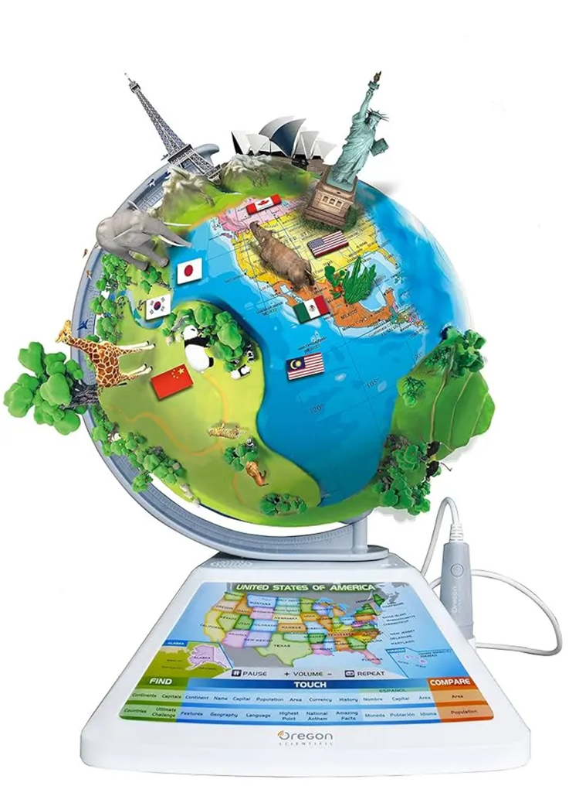

精選專案 (Projects)

產學合作代表作
狀元及地 - AR 輔助地球科學教育應用
與翰林出版合作開發。利用 AR 技術將抽象地科知識具象化， 並整合 Firebase 資料庫進行學生答題數據分析，提供教師教學反饋。
- 角色： 組長、核心程式開發、數據分析
- 技術： Unity, C#, Firebase, Android/iOS
- 成就： Innoserve 決賽入圍、獲得企業資源支持

企業進銷存管理系統
System Design
協助客戶建立完整進銷存流程，提高生產效率並降低人力成本。